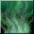
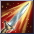
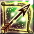
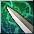
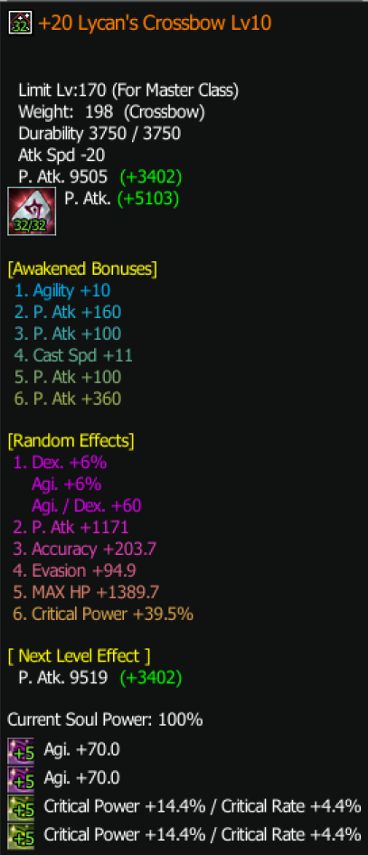

Deadeye
Tier SOverview
| Role | DPS |
| Difficulty | Easy |
| Strengths | Has huge damage and can spam AoE |
| Weaknesses | Weak to magical attacks, easily countered in PvP with Abhuva boss card. |
| Why Play It | If you like shooting arrows in all directions every 0.3 seconds, this is the class! |
Skills
Main Skills
Active:
- Piercing Arrow
- Poison Shot

- Wild Instinct
- Burning Style

You can aim for both these skills in your gear:
WI for more tanking capabilities
Burning Style for more damage and less tanking.
Recommendation: start with WI gear first and when you reach end game (240+) you can switch to full Burning Style.
WI for more tanking capabilities
Burning Style for more damage and less tanking.
Recommendation: start with WI gear first and when you reach end game (240+) you can switch to full Burning Style.
Useful Skills
- Cry of Arrows and Deflecting Aiming
 for burst windows
for burst windows - Cascade of Darkness

for an AoE slow - Sudden Rush for maximum speeeeeeeeeeed!
- Buff skills: Demonic Howl and Veteran Senses
Rotation
The play style of Deadeye is very simple:
Thanks to Combat Prowess

every time you autoattack you reduce the cooldown of your Piercing Arrow . So you’ll be spamming Auto Attack + Piercing Arrow as your main rotation and whenever Piercing Arrow is not ready, you cast Poison Shot.Talent Build
| Points | Allocation |
|---|---|
| 5 TP | 2 | 3 | 0 |
| 6 TP | 2 | 3 | 1 |
| 7 TP | 2 | 3 | 2 |
Stats
| Priority | Stats |
|---|---|
| Damage | 100% critical rate, Critical Power (CP), DEX → ordered by priority |
| Defense | Agility → more Agility means more HP and Evasion |
Accessories
| Setup | Accessories |
|---|---|
| Damage | Rings with 40+ AGI/DEX, 20+ CP, the 3rd stat could be movement speed, Evasion, P.atk depends on what you need. |
Pets & Belt
| Belt Pets: | Cheap: 2 Kenta, 2 Unicorn S3 Normal: 4 x S5 Forest Pixies + Snowman |
| Summoned Pet: | Wind Pixie is your best friend! |
Gear
Progression Path
- R2 helmet +20 (all skills +1)
- R6 +15 gear from hidden sanctuary
- Circus weapons and accessories from Circus dungeon
- Parallel World gear (either trash stats 2 slots with Wild Instinct, or max slots in each gear but trash skill, depends on what you could find)
- Island of gods weapons and rings
- DD Accessories and Yushiva belt
- Lava gear (boots, gloves, armor, helmet)
- Medal
- Emblem
Optimization
You upgrade the above when it's applicable e.g., more slots in belt, +24 weapon, +24 medusa helmet, better stats on gear. You always prioritize stats like the following item:

Example of purple stats you look for:
- Evasion and movement speed on boots | Evasion or CP on armor, Emblem, Medal
- Accuracy on gloves, medal or emblem
| Stat Targets & Item Stat Info | |
|---|---|
| Accuracy Target | |
| RoA | 1000+ Accuracy |
| Hidden RoA | 1200+ Accuracy |
| DD6 (level 180) | 1500+ Accuracy |
| SF (level 200) | 2000+ Accuracy |
| Evasion Target | |
| RoA / Hroa | 3000+ Evasion |
| DD6 | 8000+ Evasion |
| ⇒ This is an approximate target stats !! | |
| Item Stat Examples | |
| Accuracy | ~200+ on gloves, emblem, or medal |
| Crit power | ~11+ on gloves, emblem, medal |
| Evasion | ~160+ on boots, armor, medal, or emblem |
| Movement Speed | ~17+ on boots, 30+ on rings |
| You can find the exact min/max stats on the Discord channel (to be imported here soon). | |
Titles
- Title for Reduced Damage: Camper
(Purchase a tent from Merchant in Hidden Village) - Dex/Agility Titles from Underground Dungeons Stage 3:
Title Location Agility Dexterity Akt III, Scene IV Grave Palmir Plateau +28 +23 Akt III, Scene IV Adagio Palmir Plateau +23 +19 Akt III, Scene IV Largo Palmir Plateau +19 +16 Akt III, Scene III Grave Crystal Valley +22 +18
Leveling Progression
Tips
- To be continued
Endgame
| Aspect | Rating |
|---|---|
| Performance | 10/10 |
| Solo Ability | 10/10 |